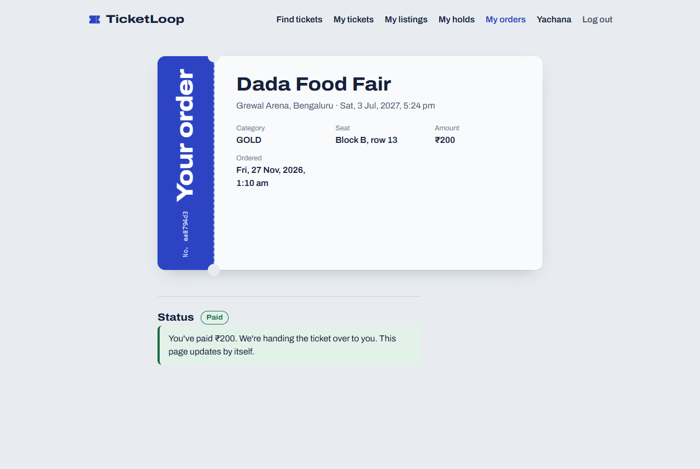
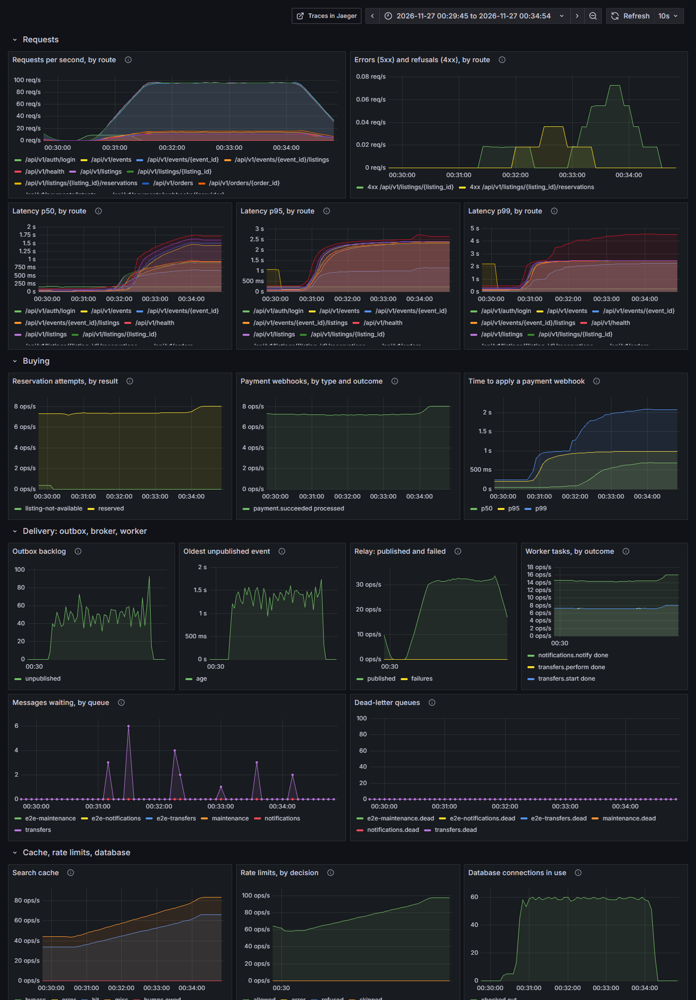
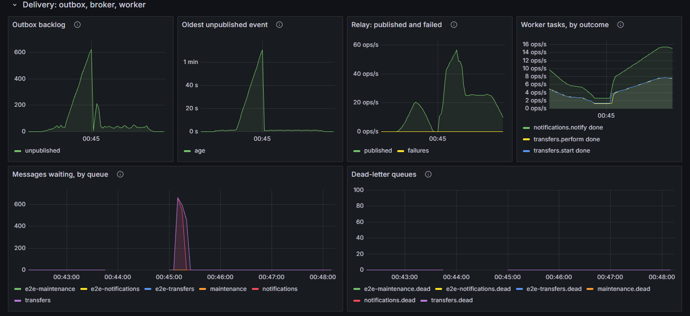

The 30-second answer
I wrote the test plan before running anything: for each test, what I expected and why, the script, what I'd measure and the pass line. Then a load stack, laid over the everyday Compose file: four API containers on a database seeded with 2,000 events, 100,000 listings and 1,000 buyers. k6 runs in a container on the same network. One Python runner starts each test, samples docker stats, asks Prometheus for the run's own window, and finishes with check_invariants.sql. A violation there fails the run, whatever its latencies.
The spike, 1,000 buyers on one listing at once, found a real bug. Correctness held, with exactly one winner, but 131 requests got 500s and 688 got no answer. FastAPI runs a sync route in several thread-pool hops, and a request kept its database connection across them. Under a burst, every thread waited for a connection that belonged to a request waiting for a thread. I fixed it with an admission gate: no more requests inside a process than it has threads. A small reproduction went from 13 seconds of 500s to passing in 0.7.
At 100 users every target held: reads p95 62 ms, reservations 106 ms. At 500 they didn't, and I didn't stop at "needs more hardware". Prometheus showed each API process at 1.17 cores for about 90 requests a second, about 13 ms of CPU each, while Postgres sat near one core of sixteen. With eight processes instead of four, throughput rose 43% at the same CPU per request: a per-process ceiling, then the laptop's. The broker drill showed the outbox doing its job: buyers kept paying with RabbitMQ down, and 621 waiting events were delivered within 30 seconds of its return.
What I built
- The plan, firstSix tests, each with a hypothesis, a script, what it measures and a pass line, plus the machine, data and configuration they belong to. Written and committed before the first run, so the results can't move the goalposts.
docs/test-plan.md - The load stack
docker-compose.load.ymlover the everyday file: every service onticketloop_perf; four API containers on ports 8000 to 8003; rate limits raised (one k6 container is one address); one trace in a hundred; Postgres at 200 connections; Prometheus finding each API container by DNS; and k6 itself, only when asked.docker-compose.load.ymlobservability/prometheus-load.yml - The invariantsFive checks in one query, one row per violation: two open listings for a ticket, two live holds on a listing, a successful payment whose order isn't paid, a ticket not owned by its last buyer, and a listing sold twice. Each is proven by a test that plants its violation and finds it.
scripts/check_invariants.sqltests/integration/test_invariants.py - The k6 scriptsThe spike (1,000 users, one reservation each, at once); the load (80% browse, 20% reserve, order, pay at fakepay and wait for
PAID); the limits (20 users searching without pause). Thresholds encode the pass lines, so k6's exit code is the verdict, and each summary is written without the buyers' tokens.tests/load/spike.jstests/load/load.jstests/load/limits.jstests/load/lib.js - The runnerOne command per test:
seed,up,spike,load --vus N [--apis N],limits(the real limits, then the raised ones back whatever happens),drill-broker(RabbitMQ stopped at 60 s and started at 120 s under 100 users),invariants.scripts/load_test.py - The admission gateAn ASGI middleware with one
anyio.Semaphoreper event loop, sized from the thread limiter, so a request inside always finds a thread for its next hop./metricsskips it.app/core/admission.pytests/integration/test_burst.py - The resultsA table per test: requests a second, p50, p95 and p99 per kind, errors, connections, CPU and memory, the cache hit ratio and the outbox delay. Every miss is explained, with Grafana screenshots. Each run's raw summary is committed.
docs/test-results.mdtests/load/results/ - One commandThe React app built and served by nginx, which forwards
/apito the API: one origin, as with Vite's dev server.docker compose up -d --buildnow starts all fifteen services, the migrate job among them, with the app at localhost:5173.frontend/Dockerfilefrontend/nginx.confdocker-compose.yml - The READMEWhat the project proves, with the numbers; the one-command start; an architecture diagram; a 5-minute demo I ran as written; the results table. The feature-by-feature tour moved to its own page.
README.mddocs/walkthrough.md
One run, from the command to the verdict
uv run python -m scripts.load_test load --vus 500, against the load stack.
- 1The runner starts watching
A thread runs
docker statsevery 3 seconds. Thendocker compose run --rm --no-deps k6 run -e VUS=500 /scripts/load.js.--no-depsmatters:compose runotherwise brings dependencies up to date, and could recreate the containers it is about to test. - 2k6 sets up
It logs in all 1,000 buyers, ten at a time, and gathers event ids. Every counter gets a 0, because k6 never judges a threshold on a metric with no samples, and a spike with no 5xx would otherwise skip its
server_errors == 0check. - 3The users run
They ramp up over 30 seconds, hold for 3 minutes and ramp down over 15. Each connection picks one of the four API containers at random from DNS. Buyers reserve, order, start paying, tell fakepay to succeed, and poll the order until it is
PAID. - 4k6 judges
Reads p95 under 300 ms, reservations p95 under 500 ms, fewer than 1% failed.
handleSummarywritesresults/load-500.json, and k6 exits 99 when a threshold is crossed. - 5The runner adds what k6 can't see
Prometheus over exactly the run's window: connections in use, the cache hit ratio, the outbox backlog and its oldest event, the queue depth. Then the peaks from
docker stats, thencheck_invariants.sqlon the whole perf database, and the verdict: thresholds, then violations.
# scripts/check_invariants.sql, the last of five checks: the oversell itself
SELECT 'sold-twice', listing_id::text, count(*) || ' paid orders'
FROM orders
WHERE status IN ('PAID', 'TRANSFER_PENDING', 'COMPLETED', 'TRANSFER_FAILED')
GROUP BY listing_id
HAVING count(*) > 1
# app/core/admission.py: no more requests inside than there are threads
async def __call__(self, scope, receive, send):
if scope["type"] != "http" or scope["path"] in UNLIMITED_PATHS:
await self.app(scope, receive, send)
return
async with _semaphore():
await self.app(scope, receive, send)The deadlock, step by step
A sync route in FastAPI isn't one call. Each sync dependency (the session, the signed-in user) runs in a thread from anyio's pool of 40, then the route in another, then the response's validation in another; between hops the request gives its thread back. The session takes a connection on its first query and keeps it until get_db commits, after the response is built. Send 250 requests to one process at once, 15 connections in its pool: 40 of them get threads, 15 get connections, and the other 25 threads wait for a connection. Now the 15 that hold connections finish a hop and need a thread for the next. There are none: all 40 are waiting for a connection. Nothing moves until the pool's 30-second timeout fails the waiters with 500s. The gate keeps the number inside at 40, so a request that finishes a hop always finds a thread, and every connection comes back. Committing the sign-in early only moved the problem: timing the checkouts showed the listing query then held its connection through validation.
Why 500 users missed, measured
During the 500-user hold, each of the four API processes used 1.16 to 1.17 cores, 4.66 in all, for 358 requests a second: about 13 ms of CPU a request, for queries, rows into objects, validating and serializing, and the middleware. One Python process runs Python on one core at a time, so it tops out a little over one core: about 90 requests a second, 350 for four. Postgres peaked at 126% of one core out of 16 and Redis at 12%. The pool showed all 60 connections in use, but only because requests held them while they waited for CPU. On eight processes: 469 requests a second, reads p95 862 ms instead of 1,340, each process at 0.90 cores and the same 13 to 14 ms a request. The ceiling had been per process. At eight it was the laptop, whose 16 threads also ran Postgres, the worker, k6, and RabbitMQ's spinning schedulers.
Measured
Spike: 1 reserved, 999 refused, 0 5xx; the reservations' p95 2,730 ms, because 1,000 short requests took turns. Load at 100 users: 195 requests a second, reads p95 62 ms, reservations p95 106 ms, 2,168 purchases, nothing failed. At 500: 327 a second, reads p95 1,340 ms. At 1,000: 307 a second, reads p95 3,023 ms, 0.01% failed. Real limits: 119 searches allowed of the 120 a minute the bucket allows, 104,913 refused with Retry-After. Broker drill: backlog 621, oldest event 71 s, delivered within 30 s of RabbitMQ's return, 9,247 orders all completed. Races: 100 rounds each, all passed. Invariants: 0 rows, every run.
Screens
No new app screens: M12 measures. Below, the README's demo against the one-command stack, and Grafana during two of the runs.



Decisions
The test setup
The plan written before any run
Instead of the plan written with the results
A pass line set after seeing the numbers is a description, not a test. Committing the plan first means a miss stays a miss.
Four API containers
Instead of one container with --workers 4
Each container is its own Prometheus target, so the per-process CPU that explained the 500-user miss was visible. The cost: four sets of ports and a DNS lookup in Prometheus.
k6 in a container on the compose network
Instead of k6 on Windows against published ports
DNS spreads users over the four containers, and no Windows port forwarding is in the path. The cost: k6 shares the CPUs it is measuring, which the results say.
Rate limits raised, then one run with the real ones
Instead of the real limits throughout
One k6 container is one address; the real search limit would refuse all but 60 a minute and measure nothing else. The limits run tests them on their own, and the runner always restores the raised ones.
One trace in a hundred
Instead of tracing off, or every request
Off would test a different system from the one that runs. Every request would put Jaeger, which keeps traces in memory, in the measurement.
Users, not arrival rate
Instead of k6's arrival-rate executors
A user waits for each page before the next, as people do, so when the system slows the offered load falls with it. That's why 1,000 users gave 307 requests a second, not more. An arrival rate would show queues growing without bound past the ceiling; I chose to measure what users get.
Judging the runs
Invariants checked in SQL after every run
Instead of trusting the k6 counters
k6 sees answers, not rows. Only the database can say whether a ticket was sold twice, and the constraints aren't the check: the check assumes they could have failed.
Thresholds as the pass lines
Instead of reading the numbers by eye
k6 exits 99 when one is crossed, so the runner's exit code is the verdict. Counters start at 0 so their thresholds are always judged.
Prometheus over each run's own window
Instead of the dashboard's 5-minute averages
The panels average over 5 minutes and carry the previous run's tail. The tables use max_over_time and increase over exactly the run.
Test the explanation
Instead of write "CPU-bound" and stop
"Each process tops out" predicts that more processes raise throughput at the same CPU per request. --apis 8 ran it: 43% more, at 13 to 14 ms a request.
The fix and the stack
An admission gate
Instead of a bigger pool, or committing the sign-in early
A bigger pool moves the threshold, not the cycle. The early commit moved the hold to the next hop. Capping requests inside at the thread count breaks the cycle for any pool size. The cost: async routes are capped at 40 in flight too.
nginx in front of the app
Instead of FastAPI serving the built files
The API image stays the API. nginx gives one origin, as Vite's proxy does, so the SameSite=Strict refresh cookie works unchanged. It looks the API up per request, so it starts in any order and survives the API being recreated.
The demo on the seeded database
Instead of a separate demo seed script
The load tests' seed already makes 100,000 buyable listings and 1,000 buyers with a known password in ten seconds; POSTGRES_DB=ticketloop_perf points the stack at it. Nothing new to maintain.
Interview questions
Answer out loud first, then open.
How did you load test it?
With k6, against four API containers on a database of 100,000 listings, from a test plan written before the first run. A spike (1,000 users reserve one listing at once), a mixed load at 100, 500 and 1,000 users, the real rate limits, and RabbitMQ stopped under load. After every run, a SQL check of the invariants: a run with one violation fails whatever its latencies.
Spike, load, stress, soak: what's the difference?
A spike is a sudden burst: does it break or queue? Load is the expected traffic held for a while: does it meet its targets? Stress pushes past capacity to find where and how it fails. Soak holds load for hours to find leaks and slow drift. I ran spike and load, and a broker failure under load; stress to 10,000 and soak were out of scope.
Why check invariants? Wasn't correctness already tested?
The tests prove the rules for the cases I thought of. Under load the system meets interleavings nobody wrote down. The check doesn't trust the constraints: it asks the data whether any ticket ended up listed twice, held twice, sold twice, or owned by someone other than its last buyer. Zero rows after every run is the claim.
What did the spike find?
A deadlock between the thread pool and the connection pool. A sync FastAPI route runs in several thread-pool hops, and the request held its connection across them. Under a burst every thread was waiting for a connection held by a request waiting for a thread, until the pool timed out with 500s. Correctness still held: one winner. I fixed it with an admission gate sized to the thread pool, and reproduced it in a test with 4 threads and 2 connections.
Why not just make the pool bigger?
It moves the threshold, not the cycle: a burst bigger than the new pool deadlocks the same way. And connections cost Postgres memory and context switches. The gate makes the cycle impossible for any pool size, and the waiting requests hold nothing.
500 users missed the latency target. Why?
Each API process is one Python interpreter, which runs Python on one core at a time. Prometheus showed each at 1.17 cores for about 90 requests a second, 13 ms of CPU each, while Postgres sat near one core of sixteen. So four processes top out at about 350 a second, and beyond that requests queue. I checked by doubling the processes: 43% more throughput at the same CPU per request.
What would you do to meet the target at 1,000 users?
First profile where the 13 ms go: serialization and turning rows into objects are the usual suspects. Then run as many API processes as there are spare cores, and put k6 on its own machine. Async routes would remove the thread hops but not the CPU, so they come after the profile.
p50, p95, p99: which do you watch?
p50 is the typical request. p95 and p99 are the slow tail, which every heavy user meets sooner or later. A page that makes ten calls has a good chance of hitting one call's p95. I set targets on p95 and report p99, because averages hide the tail.
Is your load test lying to you anywhere?
In three ways I know of, and the results say so. k6 runs on the same machine, so it takes CPU from what it measures. Users wait for each answer (a closed model), so past the ceiling they ask less, and requests a second stop rising rather than queues growing without bound. And the dashboard averages over 5 minutes, so the numbers come from Prometheus over each run's own window.
What did the broker drill show?
That RabbitMQ is only downstream. With it stopped for a minute under 100 users, nobody's request failed and paying still worked, because the webhook needs only Postgres. 621 events waited in the outbox. Within 30 seconds of RabbitMQ's return they were delivered, every order completed, and nothing was transferred twice.
Traps and fixes
- The spike's deadlock. No test had sent more requests to one process than it had threads. The first spike got 131 500s and 688 timeouts while the invariants stayed clean. Committing the sign-in early didn't fix it; timing the checkouts showed the hold had moved to the next hop. The admission gate did, with a test that failed first.
- k6 skipped a threshold without saying so. A threshold on a metric with no samples is never judged, so a perfect spike with no 5xx would not have checked
server_errors == 0at all. Every counter gets a 0 in setup. Only thresholded sub-metrics appear in the summary, so the timings that are only reported carry amax>=0threshold, commented as such. --summary-exportturns the pass flags upside down. In k6 1.4.2 its format marks a passed thresholdfalse. The runner reads onlyhandleSummary's data, whereok: truemeans passed.- The CPU peaks pointed the wrong way.
docker statsshowed the API at 1,283% at its peak. That was the setup minute, when 1,000 Argon2 sign-ins hash on four lanes outside Python's lock. During the hold, Prometheus showed the real number: 1.17 cores a process. - "Settled 174 s after the broker came back." The runner waits for k6 to finish before checking, and the load ran for another 165 s. The dashboard showed the backlog cleared in 5 s and the queues in 30.
- The dashboard blurred the runs together. Its panels average over 5 minutes, and the runs were back to back, so each picture carried the last one's tail, and a 3-second spike vanished entirely. The numbers come from Prometheus over each run's window; the spike is told in numbers, not pictures.
- The deadlocked run couldn't be watched.
/metricsneeds a thread too, so during the deadlock Prometheus's scrapes timed out and the dashboard has gaps. With the gate,/metricsskips the queue.
Known gaps, on purpose
- k6 shares the machine. It took up to 108% of a core at 1,000 users from the system it measured.
- The knee isn't pinned down. The targets hold at 195 requests a second and miss at 327; I didn't search between.
- The 13 ms aren't profiled. That is the first thing to do before tuning anything.
- No stress or soak. Pushing to 10,000 users and holding for hours were cut from the roadmap.
- Behind nginx, every browser shares one address for the rate limits. As with Vite's proxy: fine for one person on localhost. A deployment would let uvicorn trust the proxy's
X-Forwarded-For.
Check it still works
docker compose up -d --build # everything; the app at http://localhost:5173
uv run python -m scripts.load_test seed # the demo's and the load tests' data
uv run python -m scripts.load_test up # the load stack: four API containers
uv run python -m scripts.load_test spike # 1 reserved, 999 refused, 0 5xx, invariants 0 rows
uv run python -m scripts.load_test load --vus 100
uv run python -m scripts.load_test limits
uv run python -m scripts.load_test drill-broker
docker compose up -d # back to the development database
uv run pytest tests/integration/test_burst.py tests/integration/test_invariants.py
uv run pytest tests/unit/test_admission.py tests/unit/test_load_test.py tests/unit/test_web_image.py
RACE_ROUNDS=100 uv run pytest tests/concurrency/test_reservation_race.py
REQUIRE_POSTGRES=1 REQUIRE_STORAGE=1 REQUIRE_BROKER=1 REQUIRE_REDIS=1 uv run pytest # 1292 tests, what CI runs
cd frontend && npm test # 160 unit tests
npm run e2e # 21 browser tests
gh run list --workflow ci.yml --limit 3